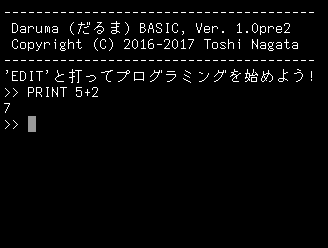

「プログラミング」に入る前に、Daruma BASIC で数の計算をやってみましょう。Daruma BASIC では、整数と小数が使えます。しばらくは整数のみを使うことにします。
次のようにタイプしてみてください。行の終わりには ENTER キーを押します。
>> PRINT 5+2
「7」と答えが表示されます。画面では下のようになります。

PRINT は、「後に置かれた式の値を表示する」ための命令です。print と小文字で書いても構いません。（PriNt のように大文字と小文字を混ぜて書いても動きますが、こういう書き方はみっともないのでやめましょう。）
たし算だけでなく、ひき算・かけ算・わり算がすべて使えます。普通の算数と違って、かけ算は *、わり算は / という記号を使います。整数のわり算では、余りは切り捨てになります。
>> PRINT 5+2
7
>> PRINT 5-2
3
>> PRINT 5*2
10
>> PRINT 5/2
2
「わり算の余り」は、% で求めることができます。プログラミングではよく出てきます。
>> PRINT 5%2
1
カッコを使って複雑な式を書くこともできます。カッコは二重、三重、…になっても構いません。
>> PRINT (2+3)*4
20
>> PRINT ((2+3)*4+5)*4
100
わり算や余りの計算で、わる数が０になると、エラーが発生します。[1]
[1] バージョン pre 2 以降。最初のバージョンでは Daruma BASIC が異常終了していました。
>> PRINT 5/0
ゼロで割ることはできません
>> PRINT 3%(5-3-2)
ゼロで割ることはできません
[ ← トップページへ ]
[ ダウンロードページへ → ]